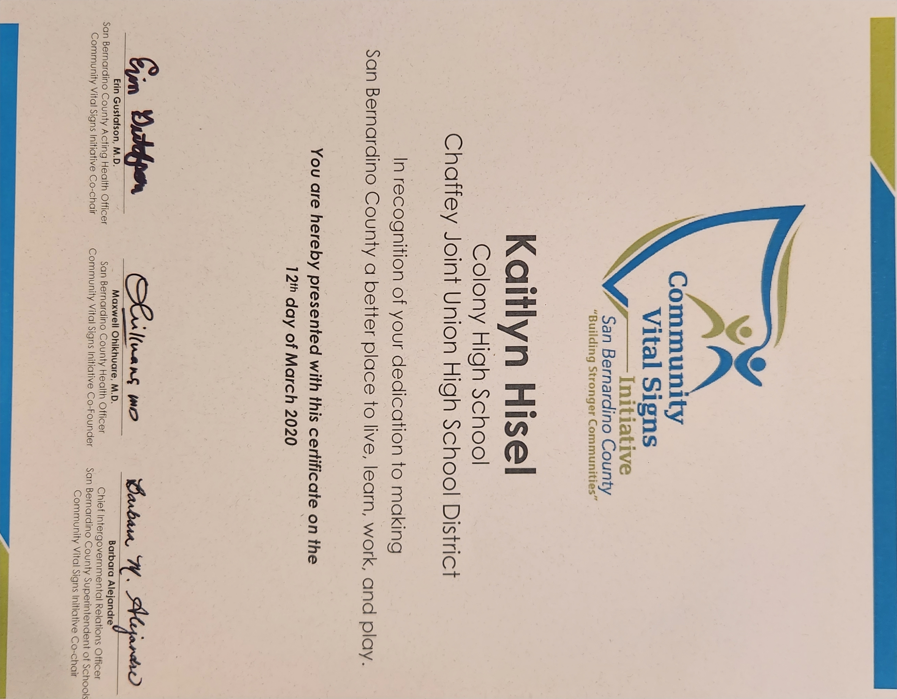
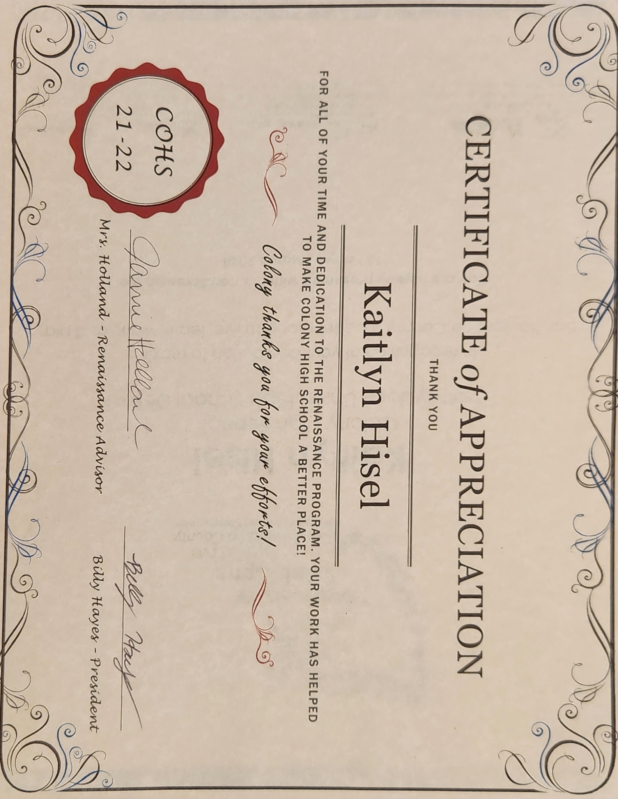
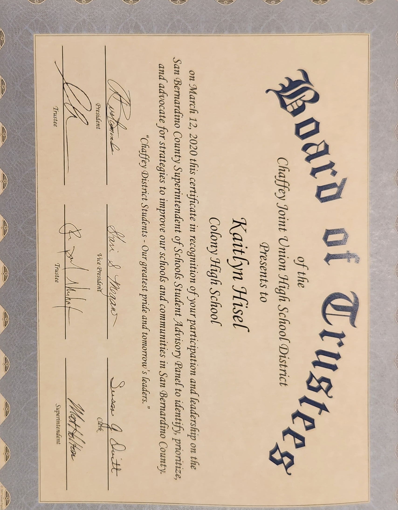
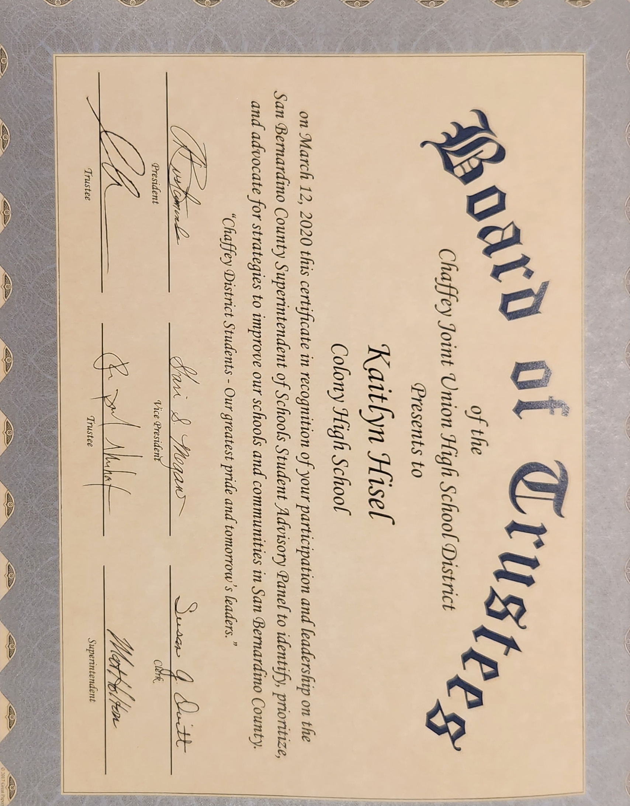

Kaitlyn Hisel
I graduated high school in the year 2022. In high school, I was a part of a leadership and mentor programs. In the leadership program, Renaissance, I was the secretary as well as the treasurer. In this class, I helped to run the snack bar during lunch worked the cash register as well as helped to plan and put on the many school events. I was involved with this program for all 4 years of high school. It allowed me to develop many leadership and communication skills that I use in my everyday life. In the mentor program, Link Crew, I helped the freshmen with the transition from middle school to high school. I would help them get involved and encourage them to get involved in the many clubs offered. In the class, I would help plan the many events to help them become engaged. I am currently a full-time student at the University of California Riverside, majoring in Business and planning to graduate in 2026. At UCR I am involved in the Honors program. This program helps students become more involved on campus and help develop relationships with fellow students and faculty. It provides support and a more personal experience to the learning experience.
At the moment I am working at the QVC distribution warehouse. I started at this location in July 2022. My position requires me to be able to process a customer's return in an efficient manner with little to no mistakes. I also need to maintain a consistent speed and process a specific number of items in the allotted time. This Job has allowed me to learn how to manage my time in more efficient ways. In order to hit the goals that my managers give us I needed to know how long I was able to take per item and was able to further develop this skill.
Outside of work and school, I volunteer at the AYSO soccer park. I am there every weekend and often throughout the week. I am actually the Snack Bar coordinator. This position requires me to buy snacks and drinks for the games that are held. Besides that, I run the snack bar and handle the money and get the customers what they are asking for. To be able to run the snack bar I was required to get my food handlers license. Outside of the snack bar, I also help with the setup of the games and fields. In order for the kids to be able to play, the board members are there at 7 am to begin setting up the park. We put up nets and flags to create the fields.
Experience
Warehouse Associate
• Pick and pack costumers orders
• Proccess the returns in efficent manner
• Inspecting items returned
• Use programs like excel
• Flexable to move to other departments when needed
Cashier
• Responsible for checking out customers
• Manage money and Square card reader
• Stock snack bar every week
Treasurer and Secretary
• Run and plan school events
• Review requisition forms for the events planned
• Take minutes at the Executive Board meetings
• Helped run the school snack bar at lunch
Education
UC Riverside
Portfolio




